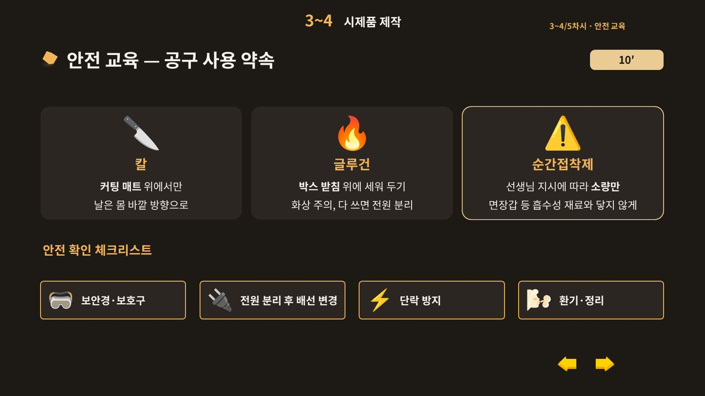
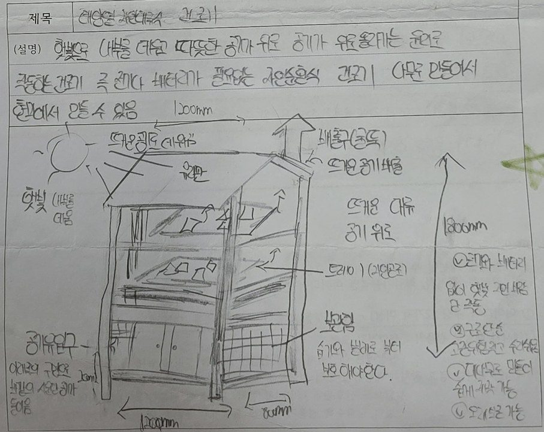
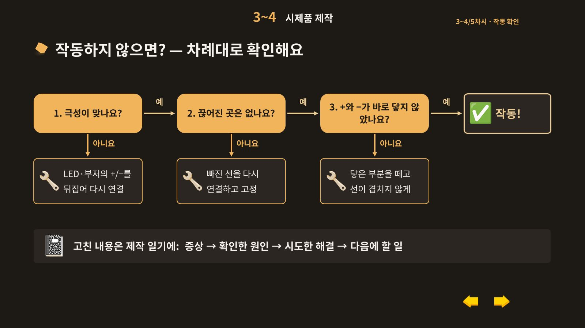
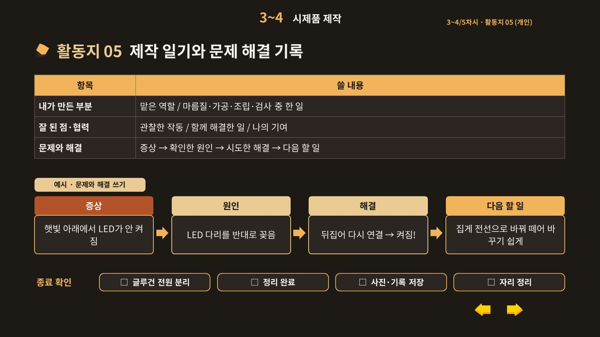

제작 1 — 기본 구조와 첫 작동
오늘의 목표모둠원과 역할을 나누어 공구를 안전하게 쓰며 시제품의 기본 구조를 만들고, 태양전지와 전자부품을 연결해 에너지 전환이 일어나는지 확인하고 기록해요.

수업 흐름
← → 키로 단계를 넘겨요. 교사 모드를 켜면 지도안의 발문과 유의점이 함께 보여요.
공구 사용 약속부터
평평한 재료는 커팅 매트 위에서 쇠자를 대고, 날은 몸 바깥 방향으로. 둥근 페트병·깡통은 칼로 작은 틈만 낸 뒤 가위로 잘라요. 자른 단면과 깡통 가장자리는 절연 테이프로 감싸요.
받침대에 세워 두기. 노즐과 녹은 접착제는 맨손으로 만지지 않기. 다 쓰면 전원 분리.
보안경을 쓰고 환기되는 곳에서 소량만. 면장갑 등 흡수성 재료와 닿지 않게. 피부가 붙으면 억지로 떼지 말고 따뜻한 비눗물에 불린 뒤 선생님께 알려요.
금 간 태양전지는 쓰지 않아요(깨진 모서리에 베일 수 있어요). 햇빛 시험 때 해를 직접 보지 않아요. 연결은 납땜 없이 집게 전선·커넥터로 해요.

전지와 회로 약속
충전지가 아닌 건전지·코인전지는 절대 충전하지 않아요. 새거나 터질 수 있어요. 밤에 쓰는 설계는 충전지(예: 니켈수소 AA)와 충전 모듈로 만들어요.
리튬 전지는 수업에서 쓰지 않아요. 합선되거나 과충전되면 뜨거워지고 불이 날 수 있어요(쓰려면 보호 회로가 든 충전 모듈과 선생님 확인).
전지의 +와 −를 전선으로 바로 잇지 않아요. 뜨거워지면 바로 떼고 선생님께 알려요.
전지·충전지에 LED를 달 때는 저항을 직렬로 함께 연결해요. 저항 없이 연결하면 전류가 너무 커서 LED가 망가져요.
오늘의 질문
선정한 문제를 해결하는 시제품을 완성할 수 있을까?
- 모둠원과 역할을 나누어 협력하며 공구를 안전하게 사용해 태양전지 시제품을 만들 수 있다.
- 의도한 대로 에너지 전환이 일어나는지 확인하고, 제작 과정의 문제를 기록할 수 있다.
오늘의 활동: 제작 1(3차시) → 제작 2(4차시) → 작동 확인

마름질 → 가공 → 조립 → 검사
오늘 3차시 · 제작 1 — 기본 구조 + 태양전지 연결해 첫 작동
다음 시간 4차시 · 제작 2 — 완성 · 고정 · 작동 영상 촬영 / 끝나기 10분 전: 정리하고 제작 일기 쓰기

선배들의 적정기술 시제품

어떤 재료로, 태양전지와 부품을 어떻게 붙였는지 살펴보고 우리 구상도와 비교해요.
제작 1 — 기본 구조와 첫 작동
구상도에 따라 재료를 마름질하고 가공해 기본 구조를 만들어요. 태양전지와 전자부품을 연결해 기본 작동을 확인하고, 만드는 과정을 디벗으로 찍어요.

작동하지 않으면? — 차례대로 확인해요
작동!
고친 내용은 제작 일기에: 증상 → 확인한 원인 → 시도한 해결 → 다음에 할 일

정리하고 제작 일기 쓰기
| 예시 · 문제와 해결 쓰기 | |
|---|---|
| 증상 | 햇빛 아래에서 LED가 안 켜짐 |
| 원인 | LED 다리를 반대로 꽂음 |
| 해결 | 뒤집어 다시 연결 → 켜짐! |
| 다음 할 일 | 집게 전선으로 바꿔 떼어 바꾸기 쉽게 |
종료 확인
- 글루건 전원 분리
- 정리 완료
- 사진·기록 저장
- 자리 정리

활동지
활동지 05 · 제작 일기 — 제작 ① 3차시
마름질 → 가공 → 조립 → 검사. 끝나기 10분 전부터 정리하고 기록해요. 쓴 내용은 이 기기의 브라우저에만 저장돼요.
- 커팅 매트·공구 방향
- 글루건 받침·화상 주의
- 전원 분리
- 보안경·지정 보호구
- 환기·정리
1내가 만든 부분
2잘 된 점·협력
3문제와 다음 행동
- 글루건 전원 분리
- 정리 완료
- 사진·기록 저장
- 자리 정리
이 차시 슬라이드
3·4차시는 같은 슬라이드(31~39장)를 함께 써요. 오늘은 31~37장, 다음 시간에 34~39장을 봐요.
나가기 질문
다음 시간(제작 2)에 가장 먼저 할 일은 무엇인가요? 오늘 생긴 문제와 함께 적어요.